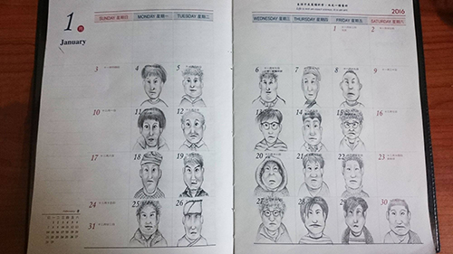
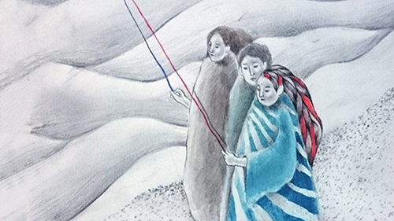

小人物
誕生於世上的每張千變萬化的臉孔，怎能用客觀的距離說雙胞胎長得完全相同，每月的主題只是幾億分之一的微小差異，我要說的只不過就是：「每個人都是無一無二存在。」
插畫
如果我的天空只侷限在眼前的事物，成全我的將不會是偉大的夢想，記得在內心遊走的自由與漫無邊際是多麼迷人，但落若活在內心世界裡也將會困住於虛幻的海市蜃樓，唯有活在當下，循著內心，才能一步步踏成人生的足跡。
寫實

從專注觀望著開始，每個像素就在我的時間裡穿梭，原來是紫色而不是膚色，原來比起樹幹枝條稍微粗了點，原來當我了解你是如何變成當下的你，才能領悟關於你的真.善.美。